Insertion of Foreign DNA into Host Cells
A conceptual and mechanical overview of biological uptake, chemical encapsulation, physical penetration, and cellular fusion methods in molecular biotechnology.
Introduction & Principles of Gene Transfer
Fundamental concepts of introducing exogenous genetic material and the biological barriers imposed by host cell architecture.
What is Foreign DNA?
Foreign DNA (also designated heterologous or exogenous DNA) refers to any genetic material introduced into a host organism from an external source. It typically comprises recombinant plasmids, synthetic complementary DNA (cDNA), engineered PCR amplicons, viral expression cassettes, or artificial chromosomes.
Why is Foreign DNA Introduced into Host Cells?
- Recombinant Protein Production: Directing host cellular translation machinery to synthesize high-value therapeutic or industrial proteins (e.g., recombinant human insulin, growth hormone, clotting factor VIII, viral vaccine antigens).
- Functional Genomics & Gene Validation: Investigating the physiological consequences of overexpressing, silencing (RNAi), or editing specific genes to delineate metabolic and signaling pathways.
- Gene Therapy: Delivering functional copies of therapeutic genes into patient cells to correct underlying inborn errors of metabolism or genetic defects.
- Agricultural Biotechnology: Conferring agronomic traits such as drought tolerance, pest resistance (e.g., Bt endotoxin), and nutritional biofortification (e.g., Golden Rice).
- Disease Modeling: Generating transgenic or knock-out animal models to recapitulate human pathologies for targeted drug discovery.
The Universal Paradigm of Gene Transfer
Across all kingdoms of life, foreign DNA delivery faces a common physical problem: how to transport large, highly charged polyanionic hydrophilic nucleic acid molecules across hydrophobic, negatively charged phospholipid bilayers without causing fatal cellular lysis.
Why Different Host Cells Demand Different Delivery Methods
Rigid Peptidoglycan Wall
Possess dense peptidoglycan and outer lipopolysaccharide membranes with high negative charge density. Lacking endocytosis, they require divalent cation charge neutralization and heat shock, or high-voltage electroporation.
Tough Cellulose & Pectin Wall
Enclosed in a thick, rigid carbohydrate matrix with 5–10 atmospheres of internal turgor pressure. Chemical transfection fails; high-velocity heavy-metal microprojectiles (gene gun) are required to pierce the wall.
Fluid Bilayer & Endocytosis
Lack a cell wall but possess a fragile, fluid plasma membrane capable of endocytosis. Highly amenable to cationic lipid complexes (lipofection) and electrical permeabilization.
Zona Pellucida & Pronuclear Target
Single-celled fertilized embryos with a thick glycoprotein coat. Heritable animal transgenesis demands direct physical microinjection into the haploid male pronucleus using a glass micropipette.

Transformation
Bacterial competence, cellular uptake of exogenous naked DNA, and selective outgrowth.
Definition
The genetic alteration of a bacterial cell resulting from the direct uptake and incorporation of exogenous, naked plasmid or chromosomal DNA from its surrounding medium.
Principle
Cells are rendered competent by altering membrane permeability. Divalent cations shield negative charges; transient thermal or electrical shock facilitates DNA entry into the cytoplasm.
Application
Routine molecular cloning, plasmid amplification, construction of cDNA/genomic libraries, and recombinant protein production in Escherichia coli.
Main Tradeoff
Restricted primarily to prokaryotes and lower eukaryotes (yeast). Most standard laboratory bacterial strains (DH5α, BL21) are not naturally competent and require artificial induction.
Natural vs. Artificial Transformation
- Natural Transformation: An active physiological, genetically programmed state encoded by competence (com) operons in bacterial species such as Streptococcus pneumoniae, Bacillus subtilis, and Neisseria gonorrhoeae. Surface protein complexes bind extracellular double-stranded DNA, degrade one strand, and transport the remaining single strand across the membrane for homologous chromosomal recombination.
- Artificial Transformation: Laboratory-induced competence forced upon non-naturally competent bacteria (such as laboratory E. coli). Physical or chemical treatments permeabilize the cell envelope to permit the uptake of intact double-stranded circular plasmid DNA.
Core Concepts in Laboratory Transformation
- Competent Cells: Bacteria treated (e.g., with chilled divalent CaCl₂ or extensive water washes for electroporation) to render their outer membranes and peptidoglycan layers permeable to exogenous plasmids.
- Selectable Marker: An antibiotic resistance gene contained on the plasmid vector (e.g., bla encoding β-lactamase for ampicillin resistance, kanR for kanamycin). Only successfully transformed bacteria survive in selective media.
- Transformed Colonies: Clonal colonies growing on selective antibiotic agar plates, each derived from a single bacterium that successfully took up, maintained, and expressed the plasmid.
Interactive Laboratory Sequence: Chemical Transformation via Heat Shock
Click each step below to reveal the specific molecular events taking place during the protocol:
Step 1: Incubation on Ice with Divalent Cations (0°C, CaCl₂)
Both plasmid DNA (polyanionic phosphate backbone) and the bacterial outer envelope (lipopolysaccharides and membrane phospholipids) carry strong negative charges, generating strong electrostatic repulsion. Positively charged calcium ions (Ca²⁺) bind and neutralize these negative charges, acting as an electrostatic bridge bringing plasmid DNA to the membrane surface. Ice-cold temperature (0°C) congeals the lipid bilayer, reducing membrane fluidity and stabilizing the complex.
DNA⁻ + Ca²⁺ + LPS/Membrane⁻ → Electrostatic Neutralization at 0°C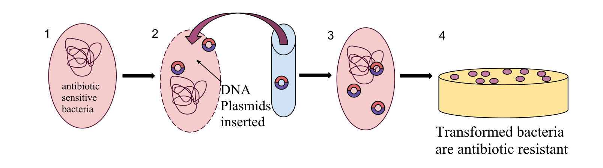
Transfection Overview
Introduction of nucleic acids into eukaryotic host cells and key conceptual distinctions.
Definition
Transfection is the process of deliberately introducing naked or complexed nucleic acids (DNA, mRNA, siRNA) into eukaryotic cells (mammalian, insect, or plant cells) using non-viral chemical or physical methods.
Key Differences: Transformation vs. Transfection vs. Transduction
| Parameter | Transformation | Transfection | Transduction |
|---|---|---|---|
| Primary Host | Bacteria, Archaea, Yeast | Eukaryotic cells (Mammalian, Insect) | Bacteria or Eukaryotes |
| Vehicle / Carrier | Naked plasmid or linear DNA | Cationic lipids, polymers, voltage, particles | Bacteriophage or Viral Vectors (Lentivirus, AAV) |
| Cell Wall Status | Intact rigid wall present | No wall (Animal) or enzymatic removal (Protoplasts) | Wall present or absent |
| Primary Mechanism | Physiological or induced competence | Endocytosis, lipid fusion, or transient pores | Receptor-mediated viral entry and injection |
| Expression Fates | Autonomous plasmid replication | Transient (episomal) vs Stable (genomic integration) | Transient episomal or stable chromosomal integration |
Transient vs. Stable Transfection
- Transient Transfection: Foreign DNA enters the eukaryotic cell nucleus but does not integrate into the host chromosomal genome. It is transcribed episomally for a finite duration (usually 24–72 hours) and is progressively degraded or diluted out during mitotic cell divisions. Ideal for rapid reporter assays and protein harvest.
- Stable Transfection: Foreign DNA integrates into host chromosomal DNA (usually at rare genomic double-strand breaks) or persists as a replicating episome with viral origins. Maintained by culturing cells under continuous selective antibiotic pressure (e.g., Geneticin/G418, Puromycin, Hygromycin B). Only cells with stable integration survive, creating permanent clonal cell lines.
Liposome Fusion & Lipofection
Cationic lipid nanoparticles, electrostatic complexation, endocytosis, and intracellular DNA release.
Definition
A chemical transfection method utilizing synthetic cationic lipid vesicles (liposomes or lipid nanoparticles) to encapsulate and deliver nucleic acids into eukaryotic cells.
Principle
Positively charged cationic lipids electrostatically condense negatively charged DNA into lipoplexes, which attach to the anionic cell surface, enter via endocytosis, and release DNA into the cytosol.
Application
Routine high-efficiency transfection of mammalian cell lines, mRNA therapeutics, COVID-19 mRNA vaccine delivery (lipid nanoparticles), and CRISPR Cas9 ribonucleoprotein delivery.
Main Tradeoff
Variable efficiency across distinct cell types; non-dividing primary cells and suspension lymphocytes are often resistant; potential cationic lipid toxicity.
Molecular Mechanism of Lipofection
Lipofection relies on synthetic cationic lipids (e.g., DOTMA, DOTAP, Lipofectamine) consisting of a positively charged quaternary ammonium head group and hydrophobic aliphatic fatty acyl chains.
Interactive Diagram: The 4-Stage Molecular Cascade of Lipofection
Click each stage to explore how nucleic acids navigate from reagent tube to host nucleus:
Stage 1: Polyphosphate DNA & Cationic Lipid Suspension
Plasmid DNA contains a repeating polyanionic phosphate backbone (PO₄⁻). In aqueous solution, synthetic cationic lipids form unilamellar vesicles where positive head groups face outwards towards the water. When mixed in serum-free medium, opposite charges drive spontaneous thermodynamic self-assembly.
Polyanionic DNA⁻ + Cationic Lipids⁺ in Aqueous Buffer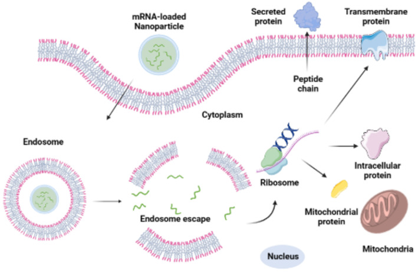
Microinjection
Direct mechanical physical injection of nucleic acids into single cells using precision glass microcapillaries.
Definition
A direct, physical gene-delivery method that introduces foreign nucleic acids directly into the cytoplasm or nucleus of a single target cell using an ultra-fine glass micropipette under an inverted microscope.
Principle
The target cell is immobilized by suction using a blunt holding pipette. A sharp glass microinjection capillary (tip 0.5–1.0 µm) penetrates the plasma membrane, expelling a precise picoliter volume of DNA solution.
Application
Single-cell embryology, developmental biology, oocyte gene delivery, Intracytoplasmic Sperm Injection (ICSI), Somatic Cell Nuclear Transfer (cloning), and precise zygotic CRISPR editing.
Main Tradeoff
Extremely low throughput (one cell at a time; ~50–100 cells/hr); demands highly specialized anti-vibration tables and micromanipulators; requires immense operator technical skill; cell lysis risk.
Targeting: Cytoplasm vs. Nucleus
- Cytoplasmic Injection: Simpler to execute with minimal physical disturbance to genomic architecture. Standard for delivering mRNA, small interfering RNA (siRNA), or translated proteins. Inefficient for plasmid DNA because the intact nuclear envelope acts as a major barrier against passive diffusion of large plasmids in non-dividing cells.
- Nuclear Injection: The needle tip is guided directly through the nuclear envelope into the nucleoplasm. Delivers DNA immediately to host RNA polymerase transcription machinery. Essential for high-efficiency expression of linear DNA constructs or integration experiments.
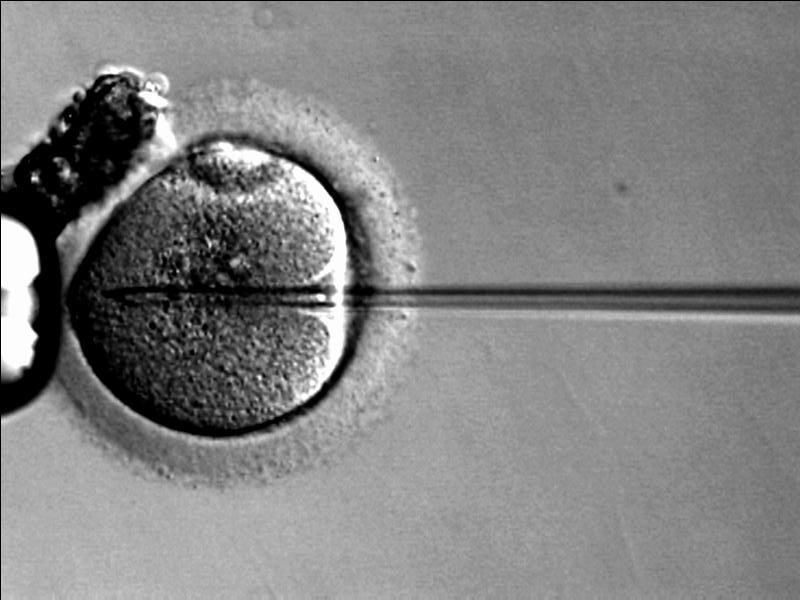
Electroporation
Electrical membrane permeabilization, dielectric breakdown, transient hydrophilic pores, and recovery.
Definition
A physical gene transfer method that subjects a cell suspension to high-voltage electrical pulses, causing temporary permeabilization of the lipid bilayer to allow foreign DNA entry.
Principle
The applied electric field induces an electrical potential across the cell membrane. Exceeding the dielectric breakdown threshold (~0.2–1.0 V) forms transient nanoscale hydrophilic pores through which DNA enters electrophoretically.
Application
Universal transformation of bacterial cells (e.g., E. coli library construction with 10⁹–10¹⁰ CFU/µg efficiency), electro-transformation of yeast, and transfection of difficult mammalian suspension cells.
Main Tradeoff
High cell mortality (typically 20% to 50% of cells lyse); highly sensitive to ionic strength (salt traces cause catastrophic electrical arc discharge and boiling); requires specialized cuvettes.
The Biophysical Principle: Dielectric Breakdown
The cell membrane behaves as an electrical capacitor composed of a non-conductive hydrophobic core between conductive aqueous solutions. When an external high-voltage field is applied, charges accumulate on opposite sides of the bilayer:
Interactive Simulation: Transient Membrane Permeabilization
Observe how lipid bilayer integrity changes dynamically when an electrical pulse is triggered:
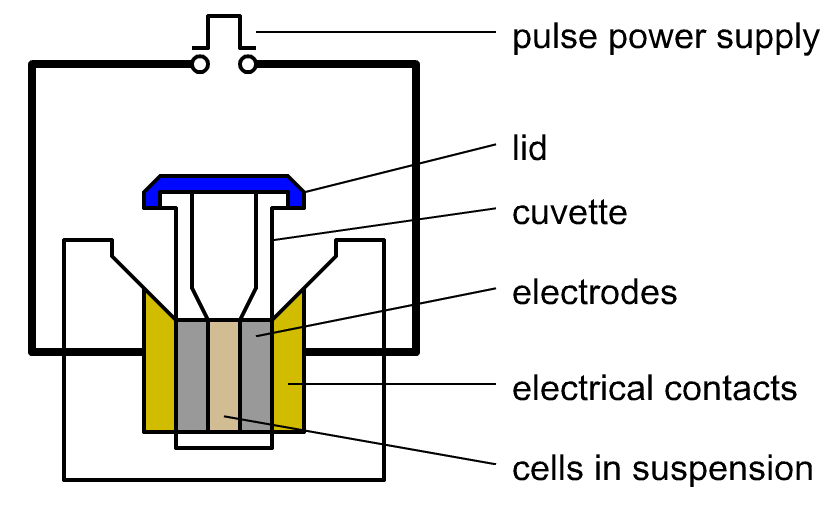
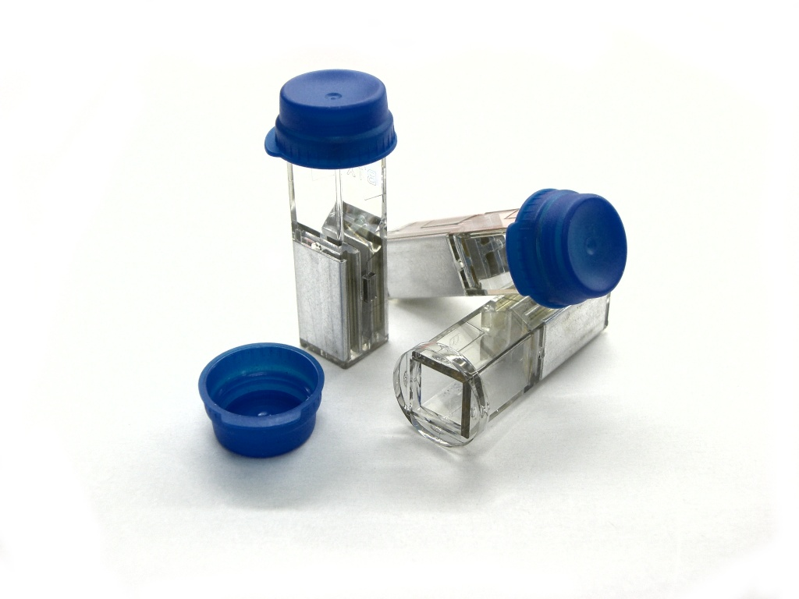
Biolistic Method (Gene Gun)
High-velocity microprojectile bombardment of heavy-metal particles into walled plant cells and recalcitrant tissues.
Definition
A physical gene-transfer method (also called particle bombardment) that accelerates DNA-coated microscopic heavy-metal particles (gold or tungsten) at supersonic velocity to penetrate cell walls and membranes.
Principle
High-pressure helium gas ruptures a calibrated disk, launching a macrocarrier carrying DNA-coated gold beads. A stopping screen halts the disk, allowing beads to shoot into the target tissue where DNA dissolves.
Application
Primary method for transforming monocot crops (maize, wheat, rice), plant chloroplast/plastid genetic engineering, and genetic immunization of animal skin (*in vivo* DNA vaccines).
Main Tradeoff
Physical tissue trauma and cell damage at the impact zone; high frequency of multi-copy and fragmented DNA insertion leading to transgene silencing; expensive gold/helium consumables.
Why the Gene Gun is Indispensable for Plant Biology
Unlike animal cells, plant cells are encased in a dense, rigid, multi-layered cell wall composed of cellulose microfibrils, hemicellulose, and pectin, with internal osmotic turgor pressure reaching 5 to 10 atmospheres. Chemical transfection (liposomes) and traditional bacterial transformation cannot cross intact plant walls. While Agrobacterium tumefaciens is effective for many dicotyledonous plants, it historically struggled with major monocot cereal grains (corn, wheat, barley, sugarcane). The biolistic method is completely cell-wall independent and physical, making it universally applicable to any plant species or tissue explant.
Basic Components of a Biolistic System
- High-Pressure Helium Gas Chamber: Pressurized between 900 to 1,550 psi (6.2–10.7 MPa) to provide the explosive propulsive force.
- Rupture Disk: A calibrated membrane that bursts cleanly when helium pressure reaches the exact rating threshold.
- Macrocarrier: A lightweight plastic disk upon which the DNA-coated gold or tungsten microprojectiles are dried.
- Stopping Screen: A sturdy stainless-steel mesh that abruptly arrests the flying macrocarrier while allowing the microscopic microprojectiles to fly through.
- Target Shelf: An adjustable-height plate holding the Petri dish with target plant callus, leaf explants, or tissue culture in a partial vacuum chamber (to minimize aerodynamic drag).
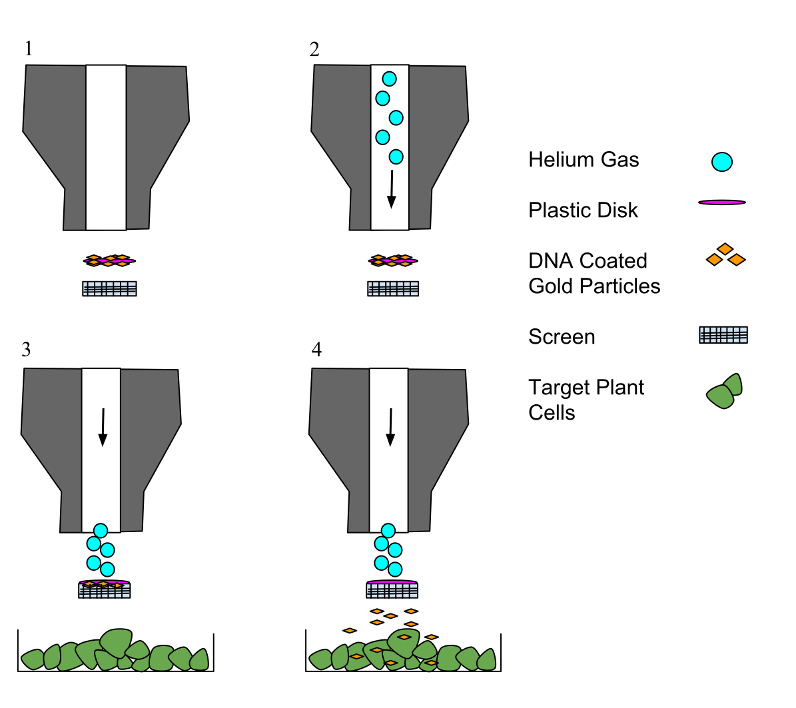
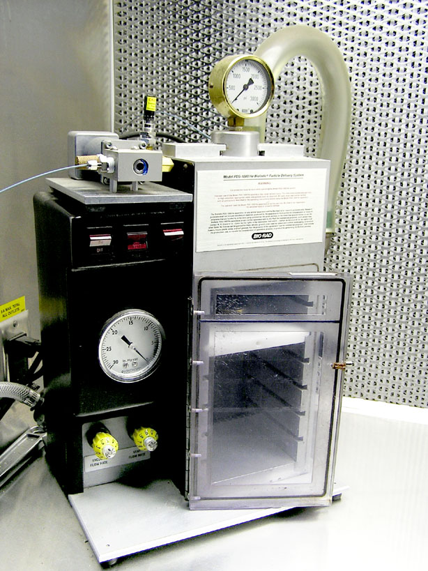
Somatic Cell Fusion
Induced fusion of entire somatic cells, formation of heterokaryons and synkaryons, and hybridoma technology.
Definition
The artificial fusion of two distinct, differentiated somatic cells to form a single viable hybrid cell possessing the cytoplasmic and genetic contents of both parental cells.
Principle
Fusogenic agents (PEG, electrofusion, inactivated Sendai virus) perturb and coalesce adjacent plasma membranes, forming a binucleated heterokaryon that fuses into a mononuclear synkaryon upon mitosis.
Application
Hybridoma technology for mass production of monoclonal antibodies (mAbs), chromosome mapping, and plant somatic hybridization (protoplast fusion to generate novel hybrids like the "pomato").
Main Tradeoff
Fusion yields a heterogeneous mixture of unfused cells and aberrant polyploids; requires stringent biochemical selection (e.g., HAT medium); hybrid cells frequently exhibit spontaneous chromosome loss.
The Crucial Distinction: Whole Cells vs. Purified DNA
The Fusogens: Chemical, Physical, and Biological
- Polyethylene Glycol (PEG): A chemical fusogen (typically 40–50% w/v) that dehydrates cell surfaces, drawing lipid bilayers into ultra-close proximity and inducing transient hydrophilic pores that bridge and coalesce adjacent membranes.
- Electrofusion: A two-step physical technique: (1) High-frequency alternating current (AC) field causes dielectrophoresis, aligning cells into "pearl chains"; (2) High-voltage direct current (DC) pulses instantly breach adjacent membranes, fusing them with high viability.
- Inactivated Sendai Virus (HVJ): An envelope virus whose surface hemagglutinin-neuraminidase (HN) and fusion (F) glycoproteins directly bind sialic acid and trigger eukaryotic membrane fusion without viral replication.
Flagship Example: Hybridoma Technology for Monoclonal Antibodies (Köhler & Milstein)
In 1975, Georges Köhler and César Milstein developed hybridoma technology (awarded the 1984 Nobel Prize in Physiology or Medicine):
The HAT Medium Selection Logic
- Cells synthesize DNA purines via two pathways: the de novo pathway and the salvage pathway (utilizing the enzyme HGPRT: hypoxanthine-guanine phosphoribosyltransferase).
- In HAT medium (Hypoxanthine, Aminopterin, Thymidine), the antibiotic aminopterin irreversibly blocks the de novo pathway. Cells are forced to survive exclusively through the salvage pathway using exogenous hypoxanthine and thymidine.
- Unfused Myeloma Cells: Lack HGPRT (HGPRT⁻). With de novo blocked by aminopterin and salvage blocked by enzyme deficiency, they all die within days.
- Unfused Primary B-Cells: Possess functional HGPRT (HGPRT⁺), but have a finite natural lifespan and die naturally within 1–2 weeks in culture.
- Hybridoma Cells: Possess immortality from the myeloma parent AND functional HGPRT from the B-cell parent. They survive, proliferate indefinitely, and continuously secrete homogeneous monoclonal antibodies!
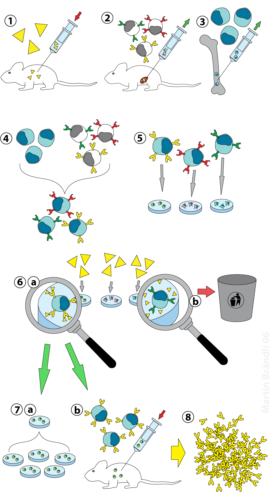
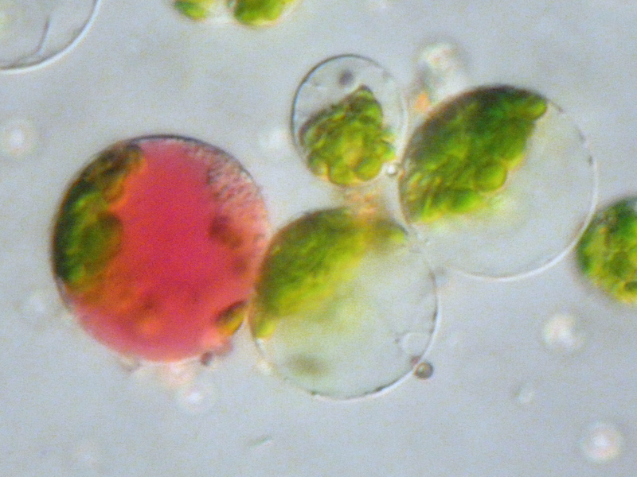
Gene Transfer by Pronuclear Microinjection
Targeting the male pronucleus of fertilized 1-cell zygotes to generate stable transgenic animals.
Definition
A specialized form of microinjection wherein linear foreign DNA is specifically delivered into a haploid pronucleus of a single-cell fertilized egg (zygote) to generate a transgenic organism.
Principle
The larger male pronucleus is microinjected with ~1–2 pL of DNA solution. As the zygote replicates, the transgene integrates into the host chromosome, giving rise to an embryo where all cells carry the gene.
Application
Generation of transgenic animals (transgenic founder mice, sheep/goats for mammary biopharming of human therapeutic proteins, and gene-function knock-in models).
Main Tradeoff
Random chromosomal integration site (position effect variation / insertional mutagenesis); unpredictable copy number (tandem concatemers); requires animal colonies and embryo transfer surgery.
What is a Pronucleus?
A pronucleus is the haploid nucleus of a gamete (either sperm or egg) present in the single-cell fertilized ovum (zygote) immediately following fertilization, before the two parent pronuclei undergo nuclear envelope breakdown and fuse their genomes into a single diploid nucleus (syngamy).
Why is the Male Pronucleus Specifically Targeted?
- Greater Physical Volume: The male pronucleus (derived from the decondensing sperm head) is substantially larger than the maternal female pronucleus, making it far easier to identify and target under differential interference contrast (DIC) microscopy.
- Peripheral Location: The male pronucleus is generally located closer to the plasma membrane (oolemma) and adjacent to the second polar body, providing an unobstructed angle for the microinjection needle.
- Accessible Chromatin: During the protamine-to-histone transition, the paternal chromatin is in a highly relaxed, decondensed state with active DNA repair enzymes, which facilitates higher rates of foreign DNA integration into host chromosomal breaks.
The Complete Experimental Workflow
- Superovulation & Mating: Donor females are treated with gonadotropins (PMSG and hCG) to induce superovulation and mated with fertile stud males.
- Zygote Recovery: One-cell fertilized embryos are surgically harvested from the ampulla of the oviduct prior to the first mitotic cleavage.
- Pronuclear Microinjection: Under an inverted microscope, the zygote is held by a suction holding pipette. The glass microinjection needle penetrates the zona pellucida, oolemma, and the male pronuclear membrane. DNA solution (containing ~100–500 copies of linearized construct) is injected until a visible swelling (~30–50% increase in pronuclear volume) confirms successful delivery.
- Oviductal Embryo Transfer: Surviving injected embryos are surgically implanted into the oviduct of pseudopregnant recipient foster mothers (induced by mating with vasectomized sterile males).
- Genotyping & Screening: Founder pups (F0) are born after gestation (~19–21 days in mice). Genomic DNA extracted from tail tip biopsies is screened by PCR and Southern blotting to confirm transgene presence, integration copy number, and subsequent germline transmission to F1 progeny.
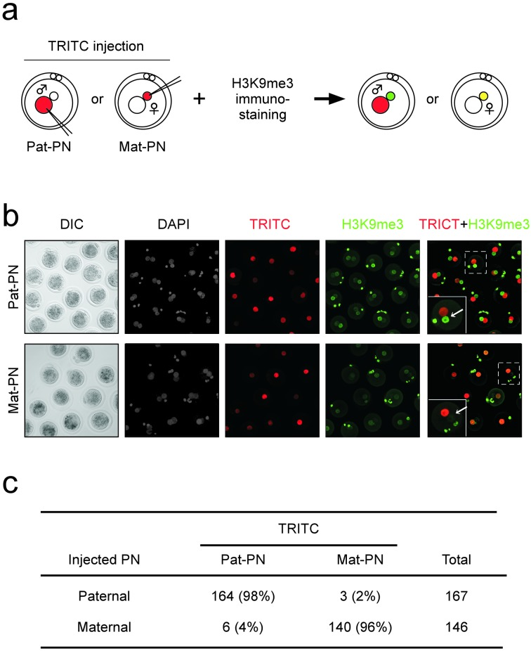
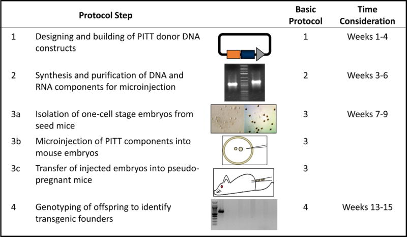
Core Comparison of DNA Insertion Methods
Interactive synthesis across principles, target systems, entry mechanisms, applications, and primary limitations.
Click any row in the table below to open a quick-inspector card with key takeaways and jump directly to that method section!
| Method | Basic Principle | Main Target / Cell Type | How DNA Enters | Major Application | Major Limitation |
|---|---|---|---|---|---|
| 🧫 Transformation | DNA uptake by competent cells | Mainly bacterial cells (e.g., E. coli) | Cellular uptake across permeable wall/membrane | Cloning & recombinant DNA propagation | Host-dependent (requires competence induction) |
| 🫧 Liposome Fusion | Lipid-mediated nanoparticle delivery | Eukaryotic cells (mammalian, insect) | Endocytosis or direct membrane fusion | Transient protein expression, mRNA vaccines | Variable efficiency; cytotoxic to sensitive lines |
| 🔬 Microinjection | Direct mechanical physical injection | Individual cells, oocytes, large cells | Hollow glass micropipette penetration | Experimental single-cell gene transfer & ICSI | Extremely low throughput; operator skill dependent |
| ⚡ Electroporation | Electrical membrane permeabilization | Bacterial, yeast, and eukaryotic cells | Temporary aqueous membrane pores (kV pulse) | High-efficiency cloning & suspension cell transfer | Substantial cell death (20–50%); arcing in salt |
| 🎯 Biolistic (Gene Gun) | Microprojectile particle bombardment | Plants, walled tissues, organelle genomes | High-velocity DNA-coated gold/tungsten particles | Plant transformation (cereal monocots, plastids) | Mechanical tissue damage; multicopy gene silencing |
| 🧬 Somatic Cell Fusion | Cell membrane fusion via fusogens | Somatic cells (B-cells + myeloma, protoplasts) | Direct coalescence of two entire cell membranes | Hybridoma technology (monoclonal antibodies) | Complex selection required; chromosomal instability |
| 🥚 Pronuclear Microinjection | DNA injection into male pronucleus | Fertilized 1-cell zygotes (mammalian eggs) | Direct nuclear delivery via microcapillary | Generation of transgenic animals | Random integration locus; position effects; labor intensive |
Method Details
One-Page Concept Map
Hierarchical taxonomy of foreign DNA insertion methods based on barrier-crossing strategy.
Scientific Figure Directory & Academic Citations
Mandatory index of all externally sourced, peer-reviewed figures, microscopy photographs, and educational diagrams.
| # | Delivery Concept | Scientific Visual Title | Origin / Academic Repository | License |
|---|---|---|---|---|
| 1 | General Delivery | Figure 1.1: Molecular Cloning Overview | Wikimedia Commons / Open Educational Resources | CC-BY-SA 4.0 |
| 2 | Transformation | Figure 2.1: Artificial Bacterial Transformation | Wikimedia Commons / Biomarkers Lab Archive | Public Domain |
| 3 | Lipofection | Figure 4.1: Cellular Uptake of mRNA-LNPs | NCBI PubMed Central (PMC13473061) / Springer Nature | Open Access CC-BY 4.0 |
| 4 | Microinjection | Figure 5.1: Real Inverted Microscopy Photograph | Wikimedia Commons / ICSI Procedure Microscopy | CC-BY-SA 3.0 |
| 5 | Electroporation | Figure 6.1: Electroporation Diagram & Figure 6.2: Cuvettes | Wikimedia Commons / Peer-Reviewed Biophysics Archive | CC-BY-SA 4.0 / CC-BY 3.0 |
| 6 | Biolistics | Figure 7.1: Gene Gun Schematic & Figure 7.2: Apparatus Photo | Wikimedia Commons / OpenStax / Lab Archive | CC-BY-SA 3.0 / CC-BY 2.0 |
| 7 | Somatic Fusion | Figure 8.1: Hybridoma Technology & Figure 8.2: Protoplasts | Wikimedia Commons / Biomedical Archive | CC-BY-SA 4.0 / CC-BY-SA 3.0 |
| 8 | Pronuclear Injection | Figure 9.1: Pronuclear Distinction & Figure 9.2: PITT Workflow | NCBI PMC5682349 & NCBI PMC5123763 (NIH / Nature Protocols) | Open Access CC-BY 4.0 |
Exam Essentials: High-Yield Conceptual Distinctions
Five critical pairwise comparisons that frequently appear in university examinations.
In undergraduate examinations, examiners frequently design questions around pairs of methods that share superficial similarities but differ fundamentally in mechanism, biological level, or host range. Master these five critical contrasts:
1. Transformation vs. Transfection
2. Ordinary Microinjection vs. Pronuclear Microinjection
3. Electroporation vs. Liposome Fusion
4. Biolistics (Gene Gun) vs. Microinjection
5. Somatic Cell Fusion vs. All Direct Delivery Methods
Quick Knowledge Check (10 MCQs)
Self-assessment quiz with instant feedback, scoring, and comprehensive rationales.
Undergraduate Molecular Biology Assessment
Select the single best answer for each question below:
Laboratory Decision Game: “Which Method Would You Choose?”
Apply your knowledge to solve real-world biotechnology scenarios by selecting the optimal delivery strategy.
In modern biotechnology laboratories, choosing the wrong delivery method wastes months of research and thousands of dollars. Evaluate each experimental scenario below and select the most appropriate method based on host biological barriers, target scale, and integration requirements:
Lecture Summary & Pre-Exam Cheat Sheet
Comprehensive synoptic matrix and rapid 3-minute revision takeaways.
The 7 DNA Insertion Methods at a Glance
| Method | Delivery Class | Biophysical Principle | Host & Barrier Overcome | Key Reagent / Tool | Classic Application | Primary Limitation |
|---|---|---|---|---|---|---|
| 🧫 Transformation | Biological / Chemical | Electrostatic Ca²⁺ neutralization + thermal gradient shock | Bacteria (peptidoglycan + outer membrane) | CaCl₂ (0°C), 42°C heat-shock, SOC medium | Plasmid cloning in E. coli | Limited to competent microbial cells |
| 🫧 Lipofection | Chemical / Nanoparticle | Cationic lipid-DNA condensation & endocytosis | Mammalian / insect cells (fluid lipid bilayer) | Cationic lipids (DOTMA, Lipofectamine) | Transient protein expression, mRNA vaccines | Cytotoxicity at high doses; blocked by cell walls |
| 🔬 Microinjection | Direct Mechanical | Precision micropipette puncture & hydrostatic pressure | Individual oocytes, zygotes, large somatic cells | Glass microcapillary, micromanipulator, DIC scope | Single-cell gene validation, ICSI | Extremely low throughput (one cell at a time) |
| ⚡ Electroporation | Direct Physical | Dielectric breakdown creating aqueous membrane pores | Bacteria, yeast, plant protoplasts, suspension T-cells | High-voltage pulse generator, precision cuvettes | High-efficiency cloning, suspension cell editing | 20–50% cell mortality; arcing with residual salts |
| 🎯 Biolistics | Direct Physical | High-velocity microprojectile bombardment | Intact plant tissues, cereal crops, chloroplasts | Pressurized helium gene gun, 1 µm gold particles | Transgenic monocot crops (maize, wheat), plastids | High instrument cost, multicopy silencing |
| 🧬 Somatic Fusion | Whole-Cell Fusion | Fusogen-mediated membrane dehydration & coalescence | Somatic cells (B-cells + myeloma) or plant protoplasts | Polyethylene glycol (PEG 1500) or electrofusion, HAT | Hybridoma technology (monoclonal antibodies) | Whole-genome fusion; chromosomal instability |
| 🥚 Pronuclear Injection | Embryo Transgenesis | Direct injection into swollen male pronucleus of zygote | Fertilized 1-cell zygotes (mammalian embryos) | DIC inverted microscope, holding pipette, foster mother | Heritable transgenic animal founder creation | Random integration locus; position effects |
3-Minute Pre-Exam Takeaway Rules
- The Universal Challenge: DNA is a polyanionic, hydrophilic macromolecule. Cellular membranes are hydrophobic lipid bilayers carrying negative surface charges. Every gene transfer method exists solely to overcome this fundamental electrostatic and physical incompatibility.
- Wall vs. No Wall: Intact plant cells possess thick cellulosic walls that block liposomes and chemical transformation; they require biolistics (Gene Gun) or cell wall removal to form protoplasts. Bacteria require competence induction (CaCl₂ or electroporation) to traverse their peptidoglycan envelope.
- Transient vs. Stable: Unintegrated episomal DNA yields high-level transient expression for 24–96 hours. For stable expression, the DNA must integrate into host chromosomes, requiring selective antibiotic screening (e.g., G418, puromycin, hygromycin) over several weeks.
- Whole-Cell vs. Plasmid: Six methods transfer naked or encapsulated DNA segments into an existing cell; only somatic cell fusion merges two entire intact cells and their complete chromosomal karyotypes.
- The Germline Requirement: Somatic transfection or microinjection affects only individual cultured cells. Creating a living, fertile, heritable transgenic animal requires pronuclear microinjection into a 1-cell fertilized zygote followed by uterine implantation.